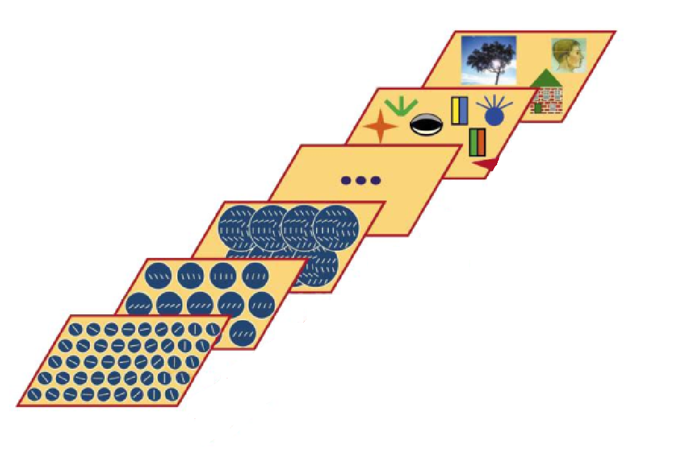

Práctica 4: Precedencia perceptiva (Global-to-Local)
Índice de objetivos
- Mostrar la existencia de dos tipos de procesamiento de la información:
Según la dirección del procesamiento cognitivo: Top-down vs. Bottom-Up
Según la dirección del reconocimiento de patrones: Global-Local vs. Local-Global
Comprobar los resultados de la hipótesis de Navon (1977)
Determinar qué factores pueden influir en el fenómeno de la precedencia perceptiva.
Procesamiento visual
Desde la descripción por parte de Hubel y Wiesel de la respuesta selectiva de poblaciones de neuronas en la corteza occipital a estimulos orientados en una determinada dirección, la metáfora computacional ha servido para describir y dar una explicación biológica al procesamiento visual.

El desarrollo de esta explicación ha sido segregada constantemente en dos etapas diferenciadas:
Ulric Neisser (1969) describió el proceso perceptivo como un proceso dividido en dos fases que se desarrollan de forma secuencial, es decir, una después de la otra. En primer lugar, ocurriría una primera fase pre-atencional. En esta fase se desarrollaría un procesamiento automático y paralelo de cada una de las características o elementos básicos de un estímulo o imagen. Posteriormente, se desarrolaría una fase atencional en la cual, de forma consciente, se podría acceder a cada una de las caracteristicas o elementos que componen la imagen de forma consciente y controlada.

De forma parecida, David Marr (1982) propuso que el procesamiento visual se dividiría en un procesamiento inicial tosco en forma de procesamiento primario a partir de una matriz primaria de diferentes intensidades lumínicas. Posteriormente, se formaría una imagen 2D a partir de los elementos básicos de la imagen. Posteriormente, se produciría un procesamiento tardío formando una imagen 3D a partir de las imagenes 2D que proporcionan las imagenes retinianas.
Por su parte, Simon Ullman (1995) propuso que el procesamiento de la información visual se realizaría en dos etapas o fases. La primera, una etapa de bajo nivel, en la cual se produce un análisis automático de la información para la cual no hacen falta conocimientos previos ni consciencia. Posteriormente, se produciríaa un procesamiento de alto nivel en el cual el flujo atencional y de selección de información dentro de la información visual está sesgado y seleccioando por la atención, la cual estaría a su vez guiada por el conocimiento previo y heurísticos requiriendo de una mayor carga atencional.

Como podemos ver, aunque las tres explicaciones ponen énfasis en diferentes aspectos del proceso perceptivo, las tres ponen énfasis en que el procesamiento visual se produce en dos fases que se dan de forma secuencial (no paralela). Según qué datos pongan en marcha el proceso cognitivo podemos diferenciar:
Bottom-up: si el procesamiento es guiado por las características del estímulo presentado.
Top-down: si el procesamiento es guiado conceptualmente por conocimientos previos.
Modelo fisiologicista
Modelo basado en las estudios de Hubel & Wiesel descritos anteriormente. Dado que el flujo primario de acceso a la información es a través de los sentidos sería la infromación externa la que guiaría la dirección de procesamiento (Bottom-up). Además, dado que esta postura argumenta que para llegar a un percepto complejo primero el sistema visual analiza los elementos que lo componen de forma local, lo lógico sería que se pueda acceder de forma primarioa a las características o parámetros locales antes que al elemento global que conforman (Local-to-Global ).
Dificultades del modelo fisiologicista
Presenta problemas para explicar cómo somos capaces de reconocer estímulos globales a partir de estímulos de carácter local. En os siguientes ejemplos, podemos ver que aunque tenemos todos los elementos locales disponibles el reconocimiento de la cara o la capacidad para leer el texto no se produce hasta que sus elementos no están configurados de una manera concreta.


Basándose en éste paradigma, se propuso el modelo Pandemonium. En éste ejemplo, se analizarían las caracteristicas básicas de diferentes letras para ver si sería posible activar sus conceptos globales. Como podemos ver en el siguiente ejemplo, si activamos los demonios básicos basados en / y \, se activarían tanto la “X” como la “A” o en menor medida la “R”, por lo que no nos permite identificar de forma inequívoca un estímulo.

En la siguiente figura se puede ver una cuchara ocluida. En ese caso, dado que un sistema de inteligencia artificial no sería capaz de identificar todos los elementos básicos que forman el concepto de “cuchara”, no sería posible identificar ese elemento.

Además, sería incapaz de explicar cómo somos capaces de obtener la misma representacion de una letra a partir de elementos básicos diferentes. Y lo que es peor, sería muy costoso entrenar a un sistema para que aprenda todas las combinaciones posibles para crear un mismo elemento, dado que aunque utilizando grafías parecidas, todos escribimos de una forma un poco diferente.

Modelo Neo-Gestaltista
Esta perspectiva propone que se procesa de forma primaria los elementos globales antes que los elementos globales, ya que serían los más salientes, sesgando la dirección de la atención (Global-to-Local). De esta manera, dado que se ha identificado el elemento global, se aplica el conocimiento previo para dirigir el flujo de procesamiento top-down. Su principal problema es que es incapaz de dar una explicación (no descripción) de las leyes que preceden al agrupamiento perceptivo que da lugar al estímulo de tipo global.

La Teoría de la Gestalt aparece en en Alemania en el primer cuarto del S. X siendo sus principales representantes:
Max Wertheimer (1880-1943)
Kurt Koffka (1887-1941)
Wolfgang Köhler (1887-1967)
Esta corriente afirma que la mente configura, a través de ciertas leyes innatas, los elementos sensoriales. La organización/ agrupación es automática, inconsciente e inevitable en lo que denominan Fenómenos estructurados o Gestalten mediante unas leyes de agrupamiento perceptivo:


El problema de esta perspectiva es que únicamente está describiendo el percepto o sensación que tiene el observador pero no ofrece una explicación a cómo se producen dentro de un sistema cognitivo la estrucutración de los estímulos bajo tales leyes.
Parte práctica: Experimento de Navon
Basándose en las perspectivas anteriores, Navon (1977) tenía como objetivo demostrar que los observadores son más rápidos a la hora de procesar y reconocer conscientemente patrones globales dentro de una escena que los patrones locales e individuales que la componen. De esta manera, daba predominio a los procesos de tipo top-down, es decir, a la hipótesis de la precedencia global.
La hipótesis de Navos se basa en que la percepcion de una configuración global de la escena precede a la percepción de lo local. De hecho, Navón predijo que cuando existiese un conflicto entre lo local y lo global, la interferencia sólo debería afectar cuando la atención se dirige a reonocer el elemento local, mientras que no se vería afectada cuando la atención se dirige a lo global.
Pregunta:¿Cuál es la dirección de procesamiento predominante?: Local-to-Global o Global-to-Local
Hipótesis de Navon
El tiempo de respuesta sería mayor cuando el observador ha de reconocer el elemento local y aún mayor cuando tiene que reconocer un elemento local incongruente con el global.
El número de errores sería mayor cuando el observador ha de reconocer el elemento local y aún mayor cuando tiene que reconocer un elemento local incongruente con el global.
Para resumir, plantea que el rendimiento general de la tarea se deterioraría en la condición de conflicto entre lo local (atendido) y lo global (no atendido).
Metodología
Para realizar el experimento, tendréis que descargar el ejecutable que se encuentra en el campus virtual: Práctica 4 Navon Global-to-Local
Instrucciones:
- El experimento está formado por 6 bloques de ensayos diferentes en los cuales, en algunos bloques se pregunta cuál es la figura Global, mientra que en otros bloques se pregunta cuál es la figura Local.

Para realizar el experimento, se debe poner énfasis tanto en no cometer errores como en la velocidad de respuesta. Para saber cómo se realiza el experimento, primero se realiza un entrenamiento consistente en 2 bloques de 8 ensayos.
La tarea del participante consiste en atender a los elementos globales o locales y responder al elemento reconocido utilizando la tecla “H” o “S” seún el elementos que hayan percibido en cada condición.

Variables
Variables independientes (VI):
Dirección de la atención (Global o Local)
Consistencia / Inconsistencia de los elementos Locales-Globales
Variable dependiente (VD), aquella que manipula el observador:
Tiempo de respuesta
Tasa de errores
\[\begin{equation} \label{trials_4} \ 6~bloques \times 4~estímulos~diferentes \times 7~repeticiones~ = ~186~ensayos~(trials) \end{equation}\]
Resultados
Los resultados muestran el efecto que esparaba Navon. En un primer lugar, el procesamiento de los elementos locales es más lento que los elementos globales. Por otra aprte, este procesamiento se ve empeorado aún más cuando existe una incongruencia entre ambos estímulos. Lo que indica una interacción debida a la incongruencia entre ambos.

Un dato curioso se produce cuando se aplica este experimento en población TEA. En este caso, los resultados se invierten. El tiempo de reacción aumenta cuando se atiende a los elementos globales e inconsistentes.

Navon llegó a las siguientes conlusiones:
Procesamos el bosque antes que los árboles, es decir, procesamos antes los elementos globales que los elementos locales.
Cuando la tarea demanda atención local y el estímulo es incongruente, los observadores tardan más tiempo (TR) y cometen más errores al responder.
Cuando se realiza la prueba en estas condiciones, el procesamiento global es inevitable e interfiere, consumiendo recursos en detrimento del procesamiento local. Además, el procesamiento global interfiere con el local haciendo que cuando ambos son incongruentes el procesamiento se vea aún más afectado.
Discusión
Modelos posteriores intentan dar explicación a la razón por la cual los resultados de Navon se producen:
Hoffman (1980) propuso un modelo híbrido. Hoffman propuso que hay dos canales de procesamiento que operan en paralelo:
Transmite el procesamiento Global-to-Local.
Transmite el procesamiento Local-to-Global.
- En este caso, se postula que somos conscientes del procesamineto de alto nivel (procesamoento tardío), mientras que no somos conscientes del procesamiento de bano nivel o pre-atencional (automático y guiado por los datos sensoriales).

Pomerantz, J. (1981): La prioridad del procesamiento global frente al local podría depender de las condiciones visuales (tamaño de las letras y distancia de observación, etc.). “A veces es más fácil procesar bosques y, otras veces es más fácil procesar árboles”.
Kinchla, R. A., & Wolfe, J. M. (1979): El tamaño del estímulo influye en que se perciba con anterioridad (precedencia) lo Global o los elementos Locales.

Martin, M. (1979a): El número de elementos locales que componen el estímulo global resulta ser un importante factor.
Martin, M. (1979b): El fenómeno de precedencia perceptiva es afectado por la asimetría hemisférica cerebral, al menos con el tipo de estímulos lingüísticos. Este autor supone:
Procesamiento Local: hemisferio izquierdo es superior.
Procesamiento Global: no está fuertemente lateralizado.
-
La especialización interhemisférica parece depender del tipo de estímulo que se estudie. Por ejemplo, si se utiliza un tipo de estímulo iconográfico:
Atención global: Activación hemisferio izquierdo.
Atención local: Activación hemisferio derecho.

Preguntas a repasar
¿Qué dos líneas o corrientes de procesamiento existen según la dirección del procesamiento cognitivo? ¿Qué diferencia a cada una de ellas?
¿Qué dos líneas o corrientes de procesamiento se proponen de acuerdo al procesamiento de atributos perceptivos o rasgos del estímulo?
¿Qué diferencia hay entre cada una de ellas?
¿Cuáles son las principales evidencias y dificultades de cada corriente?
¿Hay una dirección de procesamiento “privilegiada” según Navon?
Para reflexionar más:
¿Es suficiente el procesamiento local-global o global-local para el reconocimiento?
¿Qué función tiene la actividad del observador?
¿Qué función tienen la atención y la consciencia?
¿Por qué es importante conocer cómo se procesa y da sentido a estímulos?